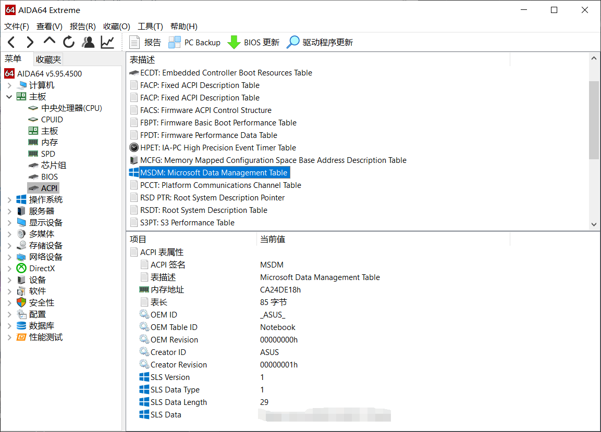

3、Windows10系统激活、版本转换与KMS密钥
提示：请先判断好自己的需求以及情况，或者与IT侠交流帮助分析。记住，只要你曾经拥有过正版的Windows 10，99%能弄回来正版纯净的Windows 10，维修店如果说他没正版只能给你装其他版本，请小心；维修店里重装系统最多只应该收少量手续费（自行斟酌），交多了无异于智商税……
迷你指南：@
a、电脑本身就是Windows，想重装或者换版本的：请从3.1开始阅读至3.3
b、电脑已经装完Windows系统不知道怎么激活的：请阅读3.2、3.3
c、各种后来装的双系统或者虚拟机要激活，请直接阅读3.3
3.1、几种情况的特别说明
如果要自行安装Windows，请阅读以下表格，将极大方便激活。以下均假设阅读者只有基本的“激活”需求而非高级功能。
| 买来的系统 | 现在的系统 | 想装的系统 | 推荐选择 |
|---|---|---|---|
| Windows 7/8/8.1 | Windows 7/8/8.1 | Windows 10 | Windows 10 企业版、教育版、专业版 |
| Windows 7/8/8.1 | Windows 10 （通过免费自动升级） |
Windows 10 | 与现在的系统版本一致 |
| Windows 7/8/8.1 | Windows 10 （后期找人安装） |
Windows 10 | Windows 10 企业版、教育版、专业版 |
| Windows 10 | Windows 10 | Windows 10 | 与买来的系统版本一致 |
| Windows 10 | Windows 7/8/8.1 | Windows 10 | 与买来的系统版本一致 |
| Windows 10 | 任意系统 | Windows 7/8/8.1 | 非常不推荐 |
如果不能确定自己是不是永久激活的Windows10，可以win + R，输入 “slmgr.vbs /xpr”或者可以在当前Windows版本查看：设置-更新与安全-激活。除Windows版本外，该页面还有激活方式的信息，该信息十分重要，常见的含义如下：
| 激活信息 | Windows版本 | 含义 |
|---|---|---|
| 通过组织服务的激活器激活 | Windows 企业版、教育版、专业版 | 使用了批量激活，180天过期； 学校购买，可用学校kms激活； 这个情况的专业版是Business版本 |
| 通过组织服务的激活器激活 | Windows 家庭中文版 | 使用了批量激活，45天过期； 这是不正常的激活方式； 请尽快问清楚售后乃至维权 |
| 使用数字权利激活 | Windows 专业版、家庭中文版 | 永久激活， Windows 7/8/8.1 升级上来的Windows 10，且没有登录微软账号; 或者是刚买的新电脑,没有登录微软账号; 这个情况的企业版是 Retail 版本 |
| 使用与Microsoft账户绑定的 数字许可证激活 |
Windows 专业版、家庭中文版 | 永久激活 Windows 7/8/8.1 升级上来的Windows 10,且登录了微软账号; 或者是刚买的新电脑,登录了微软账号; 或者是自己购买并且激活了正版Windows10; 总之在此台电脑相同版本Windows 上登录当前登录的微软账号可以直接激活,恭喜! |
| 其他情况 | 比较少见，目前没有遇到过正常用户会遇到其他情况 |
3.2、数字权利激活问题
参见3.1的第二个表格，如果没有显示“与Microsoft账户绑定的数字许可证激活”而是“数字权利激活”，可以登录你的微软账户以便进行绑定，这样只要未发生重大硬件改动，重装相应版本登录账户即可直接激活！
准备一个8G U盘，前往 下载Windows10，一键制作装机盘（或者直接运行安装），不需要去维修店花钱！
如果发生硬件改动无法用此方法激活，请参考在更换硬件后重新激活 Windows 10。
3.3、KMS软件激活问题
批量激活（Business）版本（如果已经装了就跳过这段，确定可以用学校批量激活的版本为专业版、企业版、教育版） 的Windows10可以在学校KMS网站 （版本比较旧，校园网才能访问） 下载，亦可以 直接下载纯净的镜像（比较新），推荐使用MSDN，我告诉你。
在校内KMS网站下载完后运行激活程序出问题时，请依次确认以下几点：
- 是否以 管理员身份（参看0.3） 运行激活程序（如NJU.KMS.WIN10.bat）
- 电脑是否连接在 校园网（NJU-WLAN或宿舍校园网（普天）接口 而非运营商网络或者移动热点）下（无需登录认证网页）
- 下载的.bat文件是否是 对应资源区域的“激活程序下载” 中下载的（通常 下载win10系统激活的.bat文件 可以激活当前所有可下载的版本）。
若上述检查已确认正常，请读一下错误提示信息，若有“激活服务器确定指定的产品密钥被阻止”的字样，请 参看3.4，通过 更改密钥来使用学校的KMS服务器激活 （特别是教育版）。
3.4、Windows10各版本的GVLK（批量激活）设置密钥
注意，此表的密钥不是激活密钥，而是设置密钥，可以正确的设置系统版本用于KMS激活。
| Windows 10 专业版 | W269N-WFGWX-YVC9B-4J6C9-T83GX |
|---|---|
| Windows 10 企业版 | NPPR9-FWDCX-D2C8J-H872K-2YT43 |
| Windows 10 教育版 | NW6C2-QMPVW-D7KKK-3GKT6-VCFB2 |
手机请向右滑动表格查看密钥
打开设置-更新与安全-激活，选择“更改产品密钥”，然后输入对应版本的密钥，在弹出的窗口中点击激活，或者用KMS软件激活
特别强调，学校正版的KMS激活（截至目前）只能激活以上三个列出版本（企业版不含LTSB、LTSC等等），请注意安装的系统镜像是什么版本。
不过不排除个别奇葩版本也是可以的（可以打电话问问网络中心2333），详情请去微软官网查找：
注意：输入与当前Windows版本不相符的密钥将无法正确激活，查看Windows版本的方法请参看0.6
注意：可以通过密钥输入来转换Windows10版本。但是版本不是随意转换的，有的必须要全部重装系统。能够升级降级的版本转换按照该页面给出的表格进行：Windows 10 升级路径
3.5、查看本机密钥
查看安装在本电脑上当前系统的产品密钥：
- 打开命令指示符，输入
regedit，在地址栏中的”计算机”处输入（复制）以下内容：HKEY_LOCAL_MACHINE\SOFTWARE\Microsoft\Windows NT\CurrentVersion\SoftwareProtectionPlatform
回车后在主窗口中有 BackupProductKeyDefault，可以查看到默认备份密钥。
获得出厂密钥（重装当前系统可以直接重新激活，所以非常重要）
- 按Win+X键，打开PowerShell（管理员），输入：
wmic path SoftwareLicensingService get OA3xOriginalProductKey
回车，此为写在主板上的密钥！
- 运行 AIDA64，找到打码的位置即可 
- 打电话问电脑厂商客服，在客服指引下查看贴在机器外表面的产品密钥。